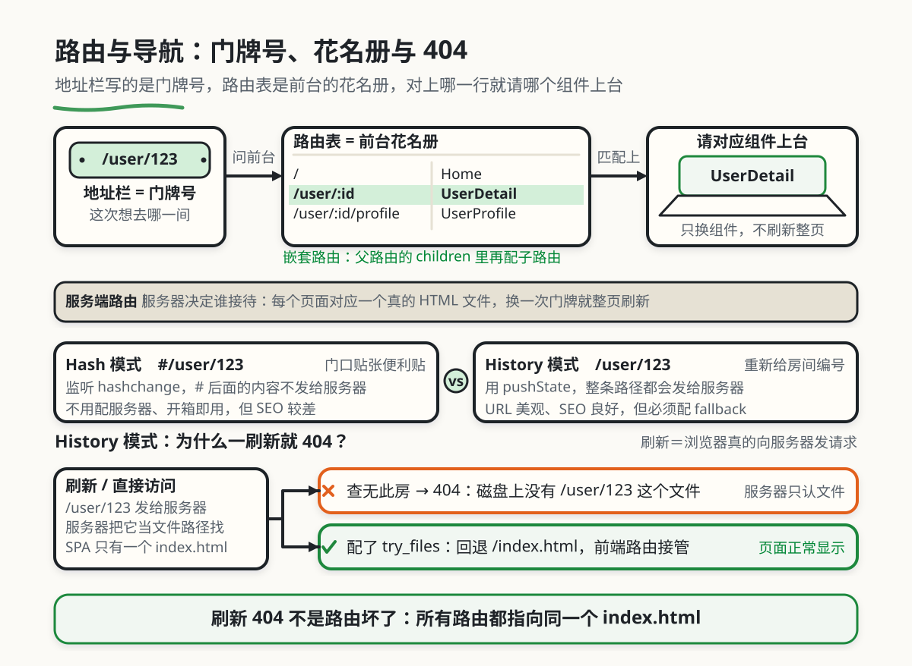

路由与导航
本章目录 · 1 节
路由与导航导论
核心问题 为什么有些网站切换页面时不会白屏刷新，像 App 一样流畅？ 这就是前端路由的魔法。本章将带你从传统网站的"翻书式跳转"，进入到单页应用的"幻灯片切换"世界，理解前端路由如何让用户体验提升一个档次。
1. 前端路由的动机
1.1 从传统网站到单页应用：用户体验的质变
回顾早期的网站浏览体验，每次点击链接都是一次"完整翻页"的过程：页面白屏一下、加载圈转动、整个页面重新渲染。如果网络慢，你还要盯着加载圈发呆几秒。这种体验在今天看来已经过时了，但当时这就是标准做法。
现代前端开发完全改变了这种模式。我们使用前端路由技术，让页面切换像手机 App 一样流畅——没有白屏、没有加载圈、用户几乎感觉不到"跳转"的过程。这种体验的提升，靠的就是前端路由系统。
📖 传统网站（MPA）
- 点击链接 → 整页刷新
- 每个页面是独立的 HTML 文件
- 浏览器重新下载所有资源
- 体验像"翻书"，有明显的翻页过程
📱 单页应用（SPA）
- 点击链接 → 无刷新切换
- 只有一个 HTML 入口文件
- 只下载需要的数据
- 体验像"幻灯片"，流畅自然
这就是"前端路由"要解决的核心问题：在不刷新页面的情况下，实现视图的切换和 URL 的同步更新。
1.2 案例：理解路由模式
你可能会说："我用 Vue Router 或者 React Router，配置一下就能用，为什么还需要了解这些底层原理？" 让我讲一个真实的故事，你就会明白为什么这些知识如此重要。
小李的部署踩坑记 小李是一个前端新人，刚入职就负责开发一个基于 Vue 的单页应用。在本地开发时一切正常，路由跳转丝般顺滑。但是当他把项目部署到测试服务器后，问题出现了：用户直接访问某个路由（如
example.com/user/123）或者在详情页刷新页面时，会看到 404 Not Found 错误。
小李懵了：明明本地能正常访问，为什么部署后就 404 了？他排查了很久，甚至怀疑是服务器配置问题。
后来他请教师兄，师兄一眼就看出了问题：小李用的是 History 模式，但服务器没有配置 fallback。当用户直接访问 /user/123 时，服务器会去查找这个路径对应的文件，但 SPA 的所有路由其实都指向同一个 index.html。解决方案很简单：配置服务器让所有路由都回退到 index.html，让前端路由接管后续处理。
小李从此明白了一个道理：不理解路由模式的原理和服务器配置要求，你连为什么报错都不知道，更别提解决问题了。
核心启示 前端路由不是"黑魔法"，理解它的工作原理能让你在遇到部署、性能、SEO 问题时快速定位、精准解决。更重要的是，它能在项目架构设计时帮你选得更准——什么时候用 Hash 模式、什么时候用 History 模式、如何避免常见的坑。
2. 核心概念：路由、模式、导航
在深入具体实现之前，我们需要先搞清楚几个核心概念。为了帮助你更好地理解，我们用一个图书馆的比喻来类比它们之间的关系。
🤔 这些概念和路由有什么关系？ 路由、模式、导航就是前端路由系统的三大支柱。
当你使用 Vue Router 或 React Router 时，框架会帮你处理：
- 路由映射 → 定义 URL 和组件的对应关系
- 模式选择 → 决定用 Hash 还是 History 模式
- 导航控制 → 处理页面跳转、浏览器前进后退
所以，理解这三个概念，你才能知道路由系统到底在做什么，为什么有时候需要特殊配置，为什么部署时会出问题。
2.1 用图书馆比喻理解路由系统
想象你在图书馆里找书，这个过程与前端路由的工作原理惊人地相似：
| 概念 | 📚 图书馆比喻 | 实际作用 | 具体例子 |
|---|---|---|---|
| 路由（Route） | 书架编号和书籍的对应关系 | 定义 URL 和页面组件的映射关系 | /user/123 路径对应 UserDetail.vue 组件 |
| 路由器（Router） | 图书馆的指引系统和定位服务 | 管理所有路由、处理导航行为的核心模块 | Vue Router、React Router 就是路由器 |
| 路由模式 | 索引方式（卡片目录 vs 电子系统） | 决定 URL 的形式和底层实现方式 | Hash 模式用 #、History 模式用普通路径 |
| 导航 | 从一个书架走到另一个书架 | 在不同页面之间切换的行为 | 点击链接、编程式跳转、浏览器前进后退 |
从表格中你能看到什么？ 我们逐行解读这张表：
路由：只是一个"配置"，告诉系统"什么 URL 对应什么页面"。就像图书馆的书号对应一本书的位置。
路由器：是"管理者"，负责根据当前的 URL 找到对应的组件并渲染。就像图书馆员根据你提供的书号帮你找到书。
路由模式：是"实现方式"，决定了 URL 长什么样、底层用什么技术实现。就像图书馆可以用纸质目录，也可以用电子查询系统。
导航：是"行为"，是用户触发页面切换的动作。就像你在图书馆里从 A 区走到 B 区。
理解这四者的区别非常重要：路由是静态配置，路由器是动态管理者，模式是技术选型，导航是用户行为。
2.2 路由（Route）：URL 与组件的映射契约
路由，本质上就是一个"契约"，它规定了访问某个 URL 时应该显示什么内容。在 Vue Router 中，一个典型的路由配置长这样：
const routes = [
{
path: '/', // URL 路径
component: Home // 对应的组件
},
{
path: '/user/:id', // 带参数的动态路由
component: UserDetail,
children: [ // 嵌套路由
{ path: 'profile', component: UserProfile },
{ path: 'posts', component: UserPosts }
]
}
]
你可能会有疑问：为什么不直接用 <a> 标签跳转，非要用路由？
答案在于"单页应用"的本质：SPA 只有一个 HTML 页面，所有的页面切换其实都是在同一个页面内替换组件。如果你用传统的 <a href="/user/123">，浏览器会真的去请求 /user/123 这个路径，导致页面刷新或 404 错误。路由的作用就是拦截这些跳转行为，用 JavaScript 动态替换组件，从而实现无刷新切换。
🔧 路由配置的几种常见模式 静态路由（最简单）：
{ path: '/home', component: Home }
{ path: '/about', component: About }
动态路由（带参数）：
{ path: '/user/:id', component: UserDetail }
// 可以匹配 /user/123、/user/abc 等
// 组件内可以通过 route.params.id 获取参数
嵌套路由（父子关系）：
{
path: '/user/:id',
component: UserLayout, // 父组件
children: [
{ path: 'profile', component: UserProfile }, // 实际路径 /user/:id/profile
{ path: 'posts', component: UserPosts } // 实际路径 /user/:id/posts
]
}
通配符路由（404 页面）：
{ path: '/:pathMatch(.*)*', component: NotFound }
// 匹配所有未定义的路由
2.3 路由模式：Hash vs History 的本质区别
前端路由有两种主流的实现模式：Hash 模式和 History 模式。它们在 URL 表现形式、底层实现、兼容性等方面有本质区别。
🤔 为什么需要两种模式？ 这其实是历史原因和技术权衡的结果。
Hash 模式是最早的前端路由实现方式，它利用 URL 中的 hash 部分（即 # 后面的内容）。hash 的变化不会触发页面刷新，而且兼容性极好（连 IE8 都支持）。
History 模式是 HTML5 推出后的"标准做法"，它利用 History API 提供的 pushState 和 replaceState 方法，可以让 URL 变得更"正常"（没有 #），但需要服务端配合配置。
打个比方：Hash 模式就像"给房间门口贴个便利贴"（不影响房间结构），History 模式就像"重新给房间编号"（需要更新门牌系统）。
| 特性 | Hash 模式 | History 模式 |
|---|---|---|
| URL 示例 | https://example.com/#/user/123 |
https://example.com/user/123 |
| 实现原理 | 监听 hashchange 事件 |
使用 History API (pushState、replaceState) |
| 服务端配置 | 不需要（hash 不被发送到服务器） | 必须配置 fallback 到 index.html |
| 浏览器兼容性 | IE8+（几乎全部浏览器） | IE10+（现代浏览器） |
| SEO 友好度 | 较差（搜索引擎可能忽略 hash） | 良好（URL 结构清晰） |
| 用户体验 | URL 有 #，看起来像"锚点跳转" |
URL 美观，接近传统网站 |
| 部署难度 | 低，无需特殊配置 | 高，需要正确配置服务器 |
从表格中你能看到什么？ 我们逐行解读这张表：
URL 示例：Hash 模式的 URL 中有明显的 #，用户会一眼看出这是个"单页应用"；History 模式的 URL 和传统网站一样，看起来更"专业"。
实现原理：Hash 模式监听的是 hashchange 事件（hash 变化时触发）；History 模式用的是 HTML5 的 History API，可以"假装"页面跳转了，但实际不刷新。
服务端配置：这是最容易踩坑的地方！Hash 模式的 # 后面的内容不会发送到服务器，所以服务器不需要知道路由的存在；但 History 模式的完整路径会发送到服务器，如果服务器没配置好，会返回 404。
SEO 友好度：搜索引擎爬虫通常不会执行 JavaScript，Hash 模式的 URL 可能被忽略；History 模式的 URL 结构清晰，更容易被收录。
部署难度：Hash 模式"开箱即用"，History 模式需要运维知识（Nginx、Apache 等）。这也是为什么很多个人项目默认用 Hash 模式的原因。
3. 演进之路：从传统网站到现代路由
讲了这么多概念，我们看一个真实的案例：某电商网站是如何从"传统多页面"一步步进化到"现代单页应用路由"的。通过这个案例，你会更直观地理解前端路由解决了什么问题。
📖 背景知识：MPA、SPA、SSR 是什么？ 在开始案例之前，先简单介绍一下这些名词：
- MPA（Multi-Page Application）：多页面应用，传统网站的开发方式。每个页面是独立的 HTML 文件，页面跳转会刷新整个页面。
- SPA（Single-Page Application）：单页面应用，现代前端的主流方式。只有一个 HTML 入口，页面切换通过 JavaScript 动态替换组件，无刷新。
- SSR（Server-Side Rendering）：服务端渲染，在服务器端生成完整的 HTML。结合了 SPA 和 MPA 的优点，首屏渲染快、SEO 好。
简单理解：MPA 是"每次翻页都重新画"，SPA 是"在同一张纸上擦了再画"，SSR 是"提前在纸上画好再给你"。
3.1 演进的全景图
下面这张表展示了前端应用的四个演进阶段，你可以看到路由技术是如何一步步发展的：
| 阶段 | 应用类型 | 路由实现 | 核心特点 | 用户体验 |
|---|---|---|---|---|
| 阶段一：传统多页 | MPA | 服务端路由 | 每个页面独立 HTML 文件 | 每次跳转都刷新 |
| 阶段二：早期 SPA | SPA（Hash 模式） | Hash 路由 | URL 带 #，兼容性好 |
无刷新，但 URL 不美观 |
| 阶段三：现代 SPA | SPA（History 模式） | History 路由 | URL 美观，需服务端配置 | 流畅，URL 接近传统网站 |
| 阶段四：混合渲染 | SPA + SSR | 同构路由 | 首屏服务端渲染，后续前端路由 | 首屏快、SEO 好、体验流畅 |
从表格中你能看到什么？ 我们逐行解读这张表：
阶段一 → 阶段二：从"有刷新"到"无刷新"，这是质的飞跃。用户第一次体验到了"像 App 一样"的流畅感，但代价是 URL 中带着 #，看起来不太专业。
阶段二 → 阶段三：从"能用"到"好用"。History 模式让 URL 变得美观，更接近传统网站，但代价是增加了部署复杂度（需要配置服务器）。
阶段三 → 阶段四：从"体验好"到"体验好 + SEO 好"。SSR 解决了 SPA 的 SEO 问题，首屏渲染速度也更快，但实现复杂度大幅提升。
总结一下：前端路由演进不只是"切换变快了"，而是整个应用架构的升级——从服务端主导到前端主导，再到前后端结合，每一步都在平衡用户体验、开发成本、SEO 等多个维度。
3.2 阶段一：传统多页应用——每次都刷新
为什么叫"传统多页应用"？因为这个阶段每个页面都是独立的 HTML 文件，页面跳转时浏览器会重新下载所有资源（HTML、CSS、JS）。这是最早的 Web 开发方式，现在很多传统网站仍然这样运作。
在这个阶段，电商网站"买得多"用的是典型的 MPA 架构：
开发方式：
- 路由实现：服务端路由，每个页面对应服务器上的一个 HTML 文件
- 页面跳转：使用
<a href="/products/123">，触发完整的页面刷新 - 状态管理：每次跳转都会丢失之前的页面状态（滚动位置、表单内容等）
这个阶段的特点：
- ✅ 优点：实现简单，对搜索引擎友好（SEO 好），浏览器前进后退开箱即用
- ❌ 缺点：每次跳转都刷新，用户体验差，服务器压力大（重复加载相同资源）
查看当时的项目结构和访问流程 项目结构（服务端渲染的典型结构）：
server/
├── views/ # HTML 模板
│ ├── index.html # 首页模板
│ ├── products.html # 商品列表页模板
│ └── product.html # 商品详情页模板
├── public/ # 静态资源
│ ├── css/
│ ├── js/
│ └── images/
└── server.js # 服务器入口
页面跳转流程：
1. 用户点击链接 <a href="/products/123">
↓
2. 浏览器发送 GET 请求到服务器
↓
3. 服务器渲染 product.html，插入数据
↓
4. 返回完整的 HTML 页面
↓
5. 浏览器解析 HTML、下载 CSS/JS、渲染页面
↓
6. 用户看到页面（这个过程通常需要 1-3 秒）
用户的痛点：
- 点击链接后页面白屏，等待时间长
- 每次跳转都重新下载相同的 CSS/JS 文件
- 浏览器前进后退会重新加载页面
- 无法保存复杂的页面状态（如筛选条件、滚动位置）
这种开发方式在小网站还能接受，但随着网站规模变大、用户对体验要求提高，这些问题开始严重影响用户留存和转化率。
3.3 阶段二：早期单页应用——Hash 路由的时代
传统多页应用的问题积累到一定程度，"买得多"团队决定引入前端路由，升级到单页应用架构。这是一个重要的转折点——从"服务端主导"进入"前端主导"。
但这个阶段也有代价：URL 中带着 #，看起来不够专业，搜索引擎收录也有问题。
开发方式：
- 路由实现：Hash 路由，利用 URL 中的
#部分 - 页面跳转：JavaScript 拦截链接点击，动态替换组件
- 状态管理：页面状态在客户端保持，不需要重新加载
这个阶段的特点：
- ✅ 优点：无刷新切换，用户体验流畅，服务器压力减小
- ❌ 缺点：URL 带
#，SEO 不友好，首次加载较慢
查看 Hash 路由的实现方式 项目结构（早期 SPA 的典型结构）：
project/
├── index.html # 唯一的 HTML 入口文件
├── css/
│ └── app.css # 所有样式打包在一个文件
├── js/
│ ├── router.js # 简单的路由实现
│ ├── views/ # 页面组件
│ │ ├── Home.js
│ │ ├── ProductList.js
│ │ └── ProductDetail.js
│ └── app.js # 应用入口
└── server.js # 简单的静态文件服务器
Hash 路由的核心代码：
// router.js - 简化的 Hash 路由实现
class HashRouter {
constructor(routes) {
this.routes = routes
this.currentPath = null
// 监听 hash 变化
window.addEventListener('hashchange', () => {
this.matchRoute()
})
// 初始化
this.matchRoute()
}
matchRoute() {
// 获取当前 hash（去掉 #）
const hash = window.location.hash.slice(1) || '/'
const route = this.routes.find(r => r.path === hash)
if (route) {
this.render(route.component)
} else {
this.render(NotFoundComponent)
}
}
render(component) {
const app = document.getElementById('app')
app.innerHTML = component.template()
component.mount?.(app)
}
navigate(path) {
window.location.hash = path
}
}
// 使用
const router = new HashRouter([
{ path: '/', component: Home },
{ path: '/products', component: ProductList },
{ path: '/products/:id', component: ProductDetail }
])
// 导航
router.navigate('/products/123')
URL 形式：
- 首页：
https://example.com/#/ - 商品列表：
https://example.com/#/products - 商品详情：
https://example.com/#/products/123
带来的改善：
- 用户体验提升：页面切换无刷新，流畅自然
- 服务器压力减小：只加载一次 HTML/CSS/JS，后续只请求数据
- 状态保持：滚动位置、表单内容等状态可以在页面切换时保持
- 离线友好：配合 Service Worker 可以实现离线访问
新的痛点：
- URL 不美观：
#让 URL 看起来像"锚点跳转"，不够专业 - SEO 问题：搜索引擎爬虫可能忽略 hash 后的内容，导致页面无法被收录
- 首次加载慢：需要一次性加载所有 JavaScript，首屏时间较长
3.4 阶段三：现代单页应用——History 路由成为主流
Hash 路由的痛点（URL 不美观、SEO 差）困扰了开发者很多年。随着 HTML5 的普及和浏览器兼容性的提升，History 路由逐渐成为主流。
History 路由利用 HTML5 History API，可以让 URL 变得"正常"（没有 #），但代价是需要服务端配合配置。
开发方式：
- 路由实现：History 路由，使用
pushState和replaceState - 路由库：Vue Router、React Router 等成熟路由库
- 服务端配置：需要配置服务器将所有路由回退到
index.html
这个阶段的特点：
- ✅ 优点：URL 美观，SEO 友好，用户体验流畅
- ❌ 缺点：部署需要特殊配置，服务器端必须配合
History 路由的实现和部署配置 项目结构（现代 SPA 的典型结构）：
project/
├── public/
│ └── index.html # 唯一的 HTML 入口
├── src/
│ ├── router/
│ │ └── index.js # 路由配置
│ ├── views/ # 页面组件
│ │ ├── Home.vue
│ │ ├── ProductList.vue
│ │ └── ProductDetail.vue
│ ├── App.vue
│ └── main.js
├── package.json
└── vite.config.js # 构建配置
Vue Router 配置示例：
// src/router/index.js
import { createRouter, createWebHistory } from 'vue-router'
const router = createRouter({
history: createWebHistory(), // History 模式
routes: [
{ path: '/', component: () => import('@/views/Home.vue') },
{ path: '/products', component: () => import('@/views/ProductList.vue') },
{ path: '/products/:id', component: () => import('@/views/ProductDetail.vue') },
{ path: '/:pathMatch(.*)*', component: () => import('@/views/NotFound.vue') }
]
})
export default router
URL 形式：
- 首页：
https://example.com/ - 商品列表：
https://example.com/products - 商品详情：
https://example.com/products/123
关键：Nginx 配置（部署时必须配置）：
server {
listen 80;
server_name example.com;
root /var/www/app;
index index.html;
# 关键配置：所有路由都指向 index.html
location / {
try_files $uri $uri/ /index.html;
}
}
为什么需要这个配置？
场景：用户直接访问 https://example.com/products/123
❌ 没有配置的情况：
1. 浏览器向服务器请求 /products/123
2. Nginx 在文件系统中查找 /products/123
3. 找不到这个文件，返回 404
✅ 配置了 try_files 的情况：
1. 浏览器向服务器请求 /products/123
2. Nginx 尝试查找文件 → 不存在
3. 回退到 /index.html（根据 try_files 规则）
4. 浏览器加载 index.html
5. Vue Router 接管，解析 /products/123
6. 渲染 ProductDetail 组件
7. 页面正常显示！
对比 Hash 模式的差异：
| 对比项 | Hash 模式 | History 模式 |
|---|---|---|
| URL | /#/products/123 |
/products/123 |
| 服务端配置 | 不需要 | 必须配置 |
| 直接访问 | ✅ 正常工作 | ❌ 需要服务端支持 |
| SEO | ⚠️ 较差 | ✅ 良好 |

try_files 回退到 /index.html。点图查看原尺寸3.5 阶段四：混合渲染——SPA + SSR 的终极方案
当 History 路由成熟后，团队开始关注更深层次的问题：如何既保留 SPA 的流畅体验，又解决 SEO 和首屏加载慢的问题？
这个阶段的核心是"同构渲染"——首屏在服务端渲染（SEO 好、加载快），后续交互在前端路由（体验流畅）。
开发方式：
- 框架选择：Next.js（React）、Nuxt.js（Vue）
- 渲染策略：服务端渲染 + 客户端水合（Hydration）
- 路由模式：History 模式（服务端已配置好）
这个阶段的特点：
- ✅ 优点：首屏快、SEO 好、后续交互流畅
- ❌ 缺点：实现复杂度高，需要服务端运行环境
混合渲染的工作原理 页面加载流程：
1. 用户访问 /products/123
↓
2. 服务端接收到请求
↓
3. 服务端渲染 ProductDetail 组件 → 生成完整 HTML
↓
4. 返回 HTML 到浏览器（包含了完整的内容）
↓
5. 浏览器快速显示内容（首屏渲染快）
↓
6. 加载 JavaScript，执行"水合"（Hydration）
↓
7. 后续页面切换由前端路由接管（无刷新）
传统 SPA vs SSR 的首屏对比：
| 对比项 | 传统 SPA | SSR |
|---|---|---|
| 首屏内容 | 白屏 → 加载 JS → 渲染 | 立即显示内容 |
| SEO | 爬虫可能看不到内容 | 爬虫能看到完整 HTML |
| 首屏时间 | 较慢（需要加载 JS） | 较快（HTML 已包含内容） |
| 后续交互 | 流畅（前端路由） | 流畅（前端路由） |
4. 原理深入：路由的工作原理
了解了实际案例后，来看前端路由的工作原理，理解 Hash 和 History 两种模式到底有什么不同。
4.1 Hash 模式的工作原理
Hash 模式的核心是利用 URL 中的 hash 部分（即 # 后面的内容）。hash 有两个重要特性：
- hash 的变化不会触发页面刷新
- hash 的变化会记录在浏览器历史栈中
这意味着我们可以在不刷新页面的情况下改变 URL，同时浏览器的前进/后退按钮也能正常工作。
工作流程：
用户点击链接 <a href="#/user/123">
↓
浏览器更新 URL（不刷新页面）
https://example.com/#/user/123
↓
触发 hashchange 事件
↓
路由监听器捕获事件
↓
解析 hash 值 → /user/123
↓
匹配路由配置 → 找到 UserDetail 组件
↓
渲染组件到页面
核心代码实现：
class HashRouter {
constructor(routes) {
this.routes = routes
// 监听 hash 变化
window.addEventListener('hashchange', () => {
this.loadRoute()
})
// 初始化加载
this.loadRoute()
}
loadRoute() {
// 获取当前 hash，去掉开头的 #
const hash = window.location.hash.slice(1) || '/'
const route = this.matchRoute(hash)
if (route) {
this.render(route.component)
}
}
matchRoute(path) {
return this.routes.find(r => r.path === path)
}
render(component) {
document.getElementById('app').innerHTML = component.template()
}
push(path) {
window.location.hash = path
}
}
Hash 模式的优点
- 兼容性好：IE8+ 都支持，几乎适用于所有浏览器
- 部署简单：不需要服务端配置，开箱即用
- 实现简单：只需要监听
hashchange事件
4.2 History 模式的工作原理
History 模式利用 HTML5 History API，提供了 pushState、replaceState 等方法，可以改变 URL 而不刷新页面。
核心 API：
// 添加新的历史记录
history.pushState(state, title, url)
// 示例：history.pushState({id: 123}, '用户详情', '/user/123')
// 替换当前历史记录
history.replaceState(state, title, url)
// 监听历史记录变化（前进/后退按钮）
window.addEventListener('popstate', (event) => {
// event.state 包含 pushState 时传入的 state
})
工作流程：
用户点击链接 <a href="/user/123">
↓
JavaScript 拦截点击事件
event.preventDefault()
↓
调用 history.pushState
history.pushState({id: 123}, '用户详情', '/user/123')
↓
URL 更新（不刷新页面）
https://example.com/user/123
↓
路由匹配并渲染组件
↓
用户点击浏览器后退按钮
↓
触发 popstate 事件
↓
路由监听器捕获事件
↓
根据新 URL 渲染对应组件
核心代码实现：
class HistoryRouter {
constructor(routes) {
this.routes = routes
// 拦截所有链接点击
document.addEventListener('click', (e) => {
const link = e.target.closest('a')
if (link && link.getAttribute('href').startsWith('/')) {
e.preventDefault()
this.push(link.getAttribute('href'))
}
})
// 监听浏览器前进/后退
window.addEventListener('popstate', () => {
this.loadRoute()
})
// 初始化加载
this.loadRoute()
}
loadRoute() {
const path = window.location.pathname
const route = this.matchRoute(path)
if (route) {
this.render(route.component)
}
}
push(path) {
history.pushState({}, '', path)
this.loadRoute()
}
render(component) {
document.getElementById('app').innerHTML = component.template()
}
}
History 模式的陷阱 History 模式最大的问题在于：当用户直接访问某个 URL 或刷新页面时，浏览器会向服务器发送请求。
如果服务器没有正确配置，会返回 404。解决方案是配置服务器让所有路由都回退到 index.html，让前端路由接管后续处理。
5. 路由配置实战指南
理论讲得差不多了，下面是实际项目中常用的路由配置模式和最佳实践。
5.1 基础路由配置
Vue Router 完整配置示例
// src/router/index.js
import { createRouter, createWebHistory } from 'vue-router'
import Home from '@/views/Home.vue'
import NotFound from '@/views/NotFound.vue'
const router = createRouter({
history: createWebHistory(import.meta.env.BASE_URL),
routes: [
{
path: '/',
name: 'Home',
component: Home
},
{
path: '/user/:id',
name: 'UserDetail',
component: () => import('@/views/UserDetail.vue'),
props: true // 将路由参数作为 props 传递
},
{
path: '/:pathMatch(.*)*',
name: 'NotFound',
component: NotFound
}
],
scrollBehavior(to, from, savedPosition) {
// 滚动行为：返回时保持滚动位置，否则滚动到顶部
if (savedPosition) {
return savedPosition
} else {
return { top: 0 }
}
}
})
export default router
5.2 路由懒加载：提升首屏性能
路由懒加载是指只在访问某个路由时才加载对应的组件，而不是一次性加载所有组件。这可以显著减少首屏加载时间。
// ❌ 一次性加载所有组件（首屏慢）
import Home from '@/views/Home.vue'
import About from '@/views/About.vue'
import User from '@/views/User.vue'
const routes = [
{ path: '/', component: Home },
{ path: '/about', component: About },
{ path: '/user', component: User }
]
// ✅ 懒加载（首屏快）
const routes = [
{ path: '/', component: () => import('@/views/Home.vue') },
{ path: '/about', component: () => import('@/views/About.vue') },
{ path: '/user', component: () => import('@/views/User.vue') }
]
懒加载的原理 当你使用
import('@/views/Home.vue')时，Webpack/Vite 会把这个组件打包成单独的文件。只有当用户访问这个路由时，才会下载对应的文件。
打个比方：懒加载就像"按需点菜"，而不是一次性把所有菜都端上来。这样可以减少首屏加载时间，提升用户体验。
5.3 路由守卫：权限控制与导航拦截
路由守卫可以在路由跳转前后执行逻辑，常用于权限验证、页面标题设置、数据预加载等场景。
// 全局前置守卫
router.beforeEach(async (to, from, next) => {
// 设置页面标题
document.title = to.meta.title || 'My App'
// 权限验证
if (to.meta.requiresAuth) {
const isAuthenticated = await checkAuth()
if (!isAuthenticated) {
next('/login')
return
}
}
next()
})
// 全局后置钩子
router.afterEach((to, from) => {
// 页面访问统计
analytics.trackPageView(to.path)
})
// 路由级守卫
const routes = [
{
path: '/admin',
component: Admin,
meta: { requiresAuth: true, roles: ['admin'] },
beforeEnter: (to, from, next) => {
// 这个路由的专属逻辑
if (hasPermission()) {
next()
} else {
next('/403')
}
}
}
]
路由守卫的常见用途
- 权限验证：检查用户是否有权限访问某个页面
- 页面标题：动态设置 document.title
- 数据预加载：在进入页面前提前获取数据
- 进度条：显示页面切换的进度条
- 访问统计：记录页面访问情况
6. 常见问题与解决方案
6.1 部署后刷新 404
问题：本地开发正常，部署到服务器后，直接访问某个路由或刷新页面会显示 404。
原因：History 模式下，服务器会将 URL 当作文件路径去查找，但 SPA 的所有路由其实都指向 index.html。
解决方案：配置服务器 fallback。
# Nginx 配置
location / {
try_files $uri $uri/ /index.html;
}
# Apache 配置（.htaccess）
<IfModule mod_rewrite.c>
RewriteEngine On
RewriteBase /
RewriteRule ^index\.html$ - [L]
RewriteCond %{REQUEST_FILENAME} !-f
RewriteCond %{REQUEST_FILENAME} !-d
RewriteRule . /index.html [L]
</IfModule>
6.2 路由参数丢失
问题：页面刷新后，路由参数 $route.params 丢失。
原因：路由参数只在路由跳转时存在，刷新后需要从 URL 中重新解析。
解决方案：
// ❌ 错误做法：只在 created 时获取参数
created() {
const userId = this.$route.params.id
this.fetchUser(userId)
}
// ✅ 正确做法：监听路由变化
watch: {
'$route.params.id': {
immediate: true,
handler(newId) {
this.fetchUser(newId)
}
}
}
6.3 页面切换时滚动位置异常
问题：页面切换后，滚动位置没有重置，或者返回时没有保持之前的位置。
解决方案：配置路由的 scrollBehavior。
const router = createRouter({
scrollBehavior(to, from, savedPosition) {
// 返回时保持滚动位置
if (savedPosition) {
return savedPosition
}
// 跳转到锚点
if (to.hash) {
return { el: to.hash }
}
// 否则滚动到顶部
return { top: 0 }
}
})
7. 总结
我们用一张表格回顾前端路由的核心概念：
| 概念 | 一句话解释 | 解决的问题 | 代表方案 |
|---|---|---|---|
| 路由 | URL 和组件的映射关系 | 访问不同 URL 显示不同内容 | Vue Router、React Router |
| Hash 模式 | 利用 URL hash 实现路由 | 兼容性好、部署简单 | Vue Router Hash 模式 |
| History 模式 | 利用 History API 实现路由 | URL 美观、SEO 好 | Vue Router History 模式 |
| 路由懒加载 | 按需加载路由组件 | 减少首屏加载时间 | () => import('./Page.vue') |
| 路由守卫 | 路由跳转前后的钩子函数 | 权限控制、数据预加载 | beforeEach、beforeEnter |
| 动态路由 | 带参数的路由 | 匹配一类路径而非单个 | /user/:id |
写在最后 前端路由是现代单页应用的核心技术之一。从早期的 Hash 模式到现在主流的 History 模式，路由技术在不断进化，为用户提供更流畅的浏览体验。
理解路由的原理和模式，能让你在遇到部署、性能、SEO 问题时快速定位、精准解决。更重要的是，它能在项目架构设计时帮你选得更准——什么时候用 Hash、什么时候用 History、如何避免常见的坑。
到这里，你应该能建立起对前端路由的整体认知。当你在实际项目中遇到路由相关的问题时，能够知道从哪里入手、如何定位、怎样解决。